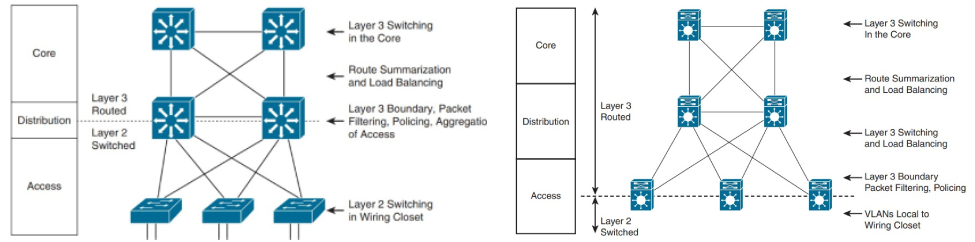

Exemples de Modèles Hiérarchiques
Le modèle hiérarchique peut être implémenté de deux manières pour concevoir un réseau de campus : la conception traditionnelle en commutation (Switched Hierarchical Design) ou la conception en réseau routé (Routed Hierarchical Design).
Comparaison entre les deux approches
| Caractéristique | Switched Hierarchical | Routed Hierarchical |
|---|---|---|
Description générale |
Principalement commutation Ethernet pour réseaux de couche 2. | Commutation de couche 3 centrée sur la couche d'accès. |
Recommandation |
Utilise des liens de couche 3 (Layer 3 links) pour la redondance. | Équilibre la charge (load balancing) dès la couche d'accès. |
Rôle de la couche de distribution |
Sépare les couches 2 et 3. Achemine les communications inter-VLAN. L’agrégation (ou summarization) de routes | Pas de rôle spécifique de couche de distribution. |
Inconvénient majeur |
Manque d'équilibrage de charge ("Spanning Tree" permet uniquement à l'un des liens redondants) | N/A. |
Avantage clé |
N/A. | Équilibrage de charge dès la couche d'accès et facilité du routage. |

Note
Une solution pour assurer la redondance entre la commutation d'accès et de distribution est Virtual Switching System (VSS). Avec VSS, deux commutateurs de distribution physiques sont combinés en un seul commutateur logique, supprimant ainsi le besoin d'utiliser le STP et d'autres protocoles de redondance tels que Hot Standby Router Protocol (HSRP), Virtual Router Redundancy Protocol (VRRP) et Gateway Load Balancing Protocol (GLBP).